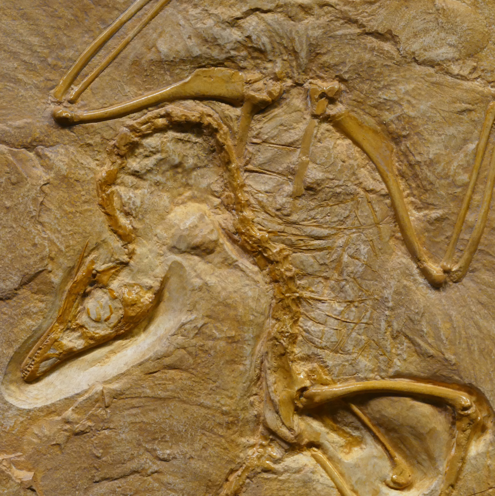
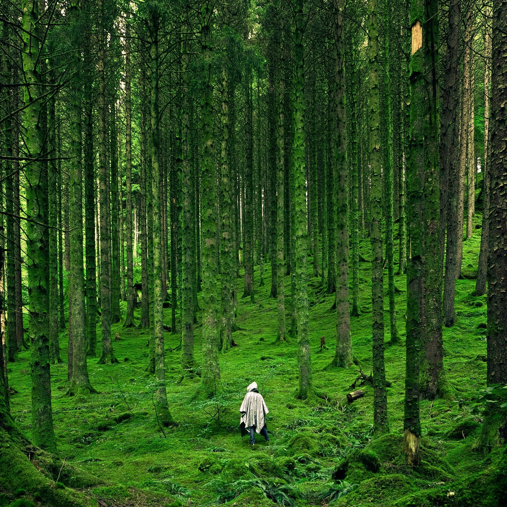

Evolution
We have different theories that have been proposed by different scientists and philosophers about the origin of humanity. About the origin of life on our planet and outside of it. In our museum you can meet some of these creatures such as Mammoth, dinosaurs and so on.
Biology & Medicine
Most of the great medical discoveries are result of labs and observation of animals. From micro-organisms to the human body, we offer a great look through the body by our advanced devices that shows inside the body of humans and different kinds of insects, birds, and other animals, with most realistic qualities. There are many different other ways we offer such as, by using the labs and microscopes and other tools to learn from.
Robotics & AI
Robotic and artificial intelligence are the future. Here we have information of the revolution of robotics and AI from useful application of AI, to use of robotics in industry.

Ecology
Humans have great impact on our planet. Its our duty to make sure we create a sustainable future for earth. Therefore it is important to learn more about it and know how to take care of it better.
Cosmology
Explore the fantastic exhibitions of the sky above us. What do you know about our cosmos? We will locate galaxies that can be seen and a bit about the early navigation ways that have been used for traveling by looking at the night sky and the stars. Our solar exploration includes the Galileo’s telescope and much more of the latest exploration of the planets in our solar system.